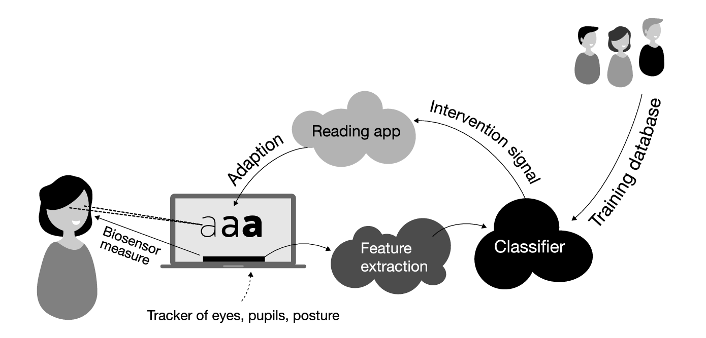

Supervisors: Per Bækgaard (pgba@dtu.dk) · Ashkan Task (ashta@dtu.dk) · Chaudhary Muhammad Aqdus Ilyas (cmuai@dtu.dk)
DTU Compute · July 2026
The problem
Reading is hard for some readers
For readers with dyslexia or age-related vision loss, text can demand
more than they can comfortably process.
Digital text can reshape itself as it is read, and an eye
tracker can tell when a reader is struggling, so it could
adapt in real time without breaking the reader's flow.
The programme
A funded, interdisciplinary effort
Reading the Reader is a research programme at DTU Compute, funded by the Novo Nordisk Foundation (about DKK 8 million).
The goalHelp readers with age-related central vision loss and dyslexia through personalised, gaze-driven typographic adaptation.
Brings together
Computer science
Typography
Psychology
Ophthalmology
Serves
Central vision loss (AMD) · Dyslexia
Reading the Reader programme, DTU Compute; funded by the Novo Nordisk Foundation.
The concept, and what is missing
Easy to draw, hard to earn

The classifier is the hard part. It is trained on a database of readers, so someone must first produce that data. And the decider can be a human (a researcher) or an AI.
But there is no platform to run the research. Prior prototypes proved the loop, yet were too coupled to swap pieces in and out.
Does wider letter spacing help an AMD reader resume faster?
Does a highlight cue cut regressions?
Each hypothesis needs different sensing, intervention, and decision logic, and a researcher just wants to plug in a module and gather data.
Concept figure reproduced from the Reading the Reader programme, DTU Compute.
Our approach
We do not build the classifier. We build the platform it presupposes.
A platform that produces reproducible session data, and exposes a seam where a human or an AI decider plugs in, all under researcher control.
No existing system unites all of it: real-time sensing, context-preserving adaptation, researcher control, and reproducible, pluggable decisions. That gap is where we fit.
The artifacta working, researcher-operated platform
+
The design knowledgeprinciples & trade-offs others can reuse
= the contribution
From their concept to ours
We named the loop: four replaceable steps
Their concept: sensing, feature extraction, classifier, intervention.
→
Their classifying loop, named as four steps we can each replace. And the classifier becomes a provider on a seam: human or AI.
What we set out to answer
Not whether reading can adapt, but how to architect it
Now that the loop is visible, the open problem becomes concrete: can this platform keep the four concerns replaceable, work on real Tobii sessions, adapt text without breaking the reader's flow, and stay under researcher control? It breaks into four questions.
RQ1 - Modularity Can sensing, analysis, decision, and intervention be separated, so a new module, even a new decider, plugs in without touching the core?
RQ2 - Sensing Can a real Tobii stream become reading events fast enough to adapt live?
RQ3 - Intervention Can the text change mid-read without costing the reader their place?
RQ4 - Control Can the researcher steer the session, and reproduce it exactly, afterwards?
The platform
The four steps, across two screens
Those four steps, now where the people are: the participant reads, the eye tracker senses, the researcher sees the gaze live and steers. The decision seam sits on the boundary, out of scope by design.
The design knowledge
Principles that keep the seams stable
The artifact is half the contribution. These four principles are the other half, the transferable part, and each one answers one research question.
RQ1 - ModularityOne seam shape, immutable snapshotsEvery module is the same shape: an identity in, a read-only snapshot in, an optional result out. New modules are additive, and none can reach into or mutate the core.
RQ2 - SensingGaze on its own real-time channelHigh-frequency gaze rides a dedicated channel, kept off the request-and-response control path, so the per-sample loop stays lock-free and inside its latency budget.
RQ3 · Context-preservingValidate, then commit at a boundaryAn intervention is validated, then committed at a controlled boundary carrying a position anchor, so the text can adapt without costing the reader their place.
RQ4 · ReproducibilityOne authoritative, replayable recordA single schema-versioned record, reconstructable by replay, so there is no second account to disagree and every session can be reproduced.
Demo
Watch the demo as evidence, not as a tour
Recorded video, narrated live
The recording is short. These five beats are the proof points we want you to watch for before we measure them on the next slides.
When beat five ends, we come back to the deck and show the same story again, now from the session record.
1
Two screens stay in sync
The participant reads while the console mirrors the live gaze.
RQ2
2
The text adapts and the reader keeps their place
The intervention fires, the text reflows, and the console shows the recovery.
RQ3
3
A proposal can be approved or overridden
The researcher stays in control of what reaches the reader.
RQ4
4
A module can change without touching the core
We swap the sensing source or decision provider behind the same seam.
RQ1
5
The session can be exported and replayed
One record is enough to reconstruct what just happened.
RQ4
What you just saw
The four questions, answered live
STUB · the 4 RQs from slide 5, now each checked, each pinned to its beat.
The evidence
Measured, not asserted
STUB · numbers grouped by the 4 stages.
Honest boundaries
What we did not prove
STUB · exactly two shortfalls + the Kalman lesson.
Where it goes next
A foundation, not an endpoint
STUB · 3 arrows; AI decision provider over the seam leads.
In one sentence
The adaptive reading loop can be cleanly separated under a real 90 Hz
Tobii loop, giving future studies, including AI-driven ones, a solid
base. You've seen it hold. That's the contribution.
Thank you
Questions
STUB · names, documentation site / repo link, "happy to go deeper." Keep up during Q&A.